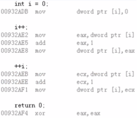

1，C 语言中讨论了原生含义，C++ 中有必要考虑前置、后置操作符能够重载，有何问题；
2，值得思考的问题：
1，下面的代码有没有区别？为什么？
1，i++ // i 的值作为返回值，i 自增 1；
2，++i // i 自增 1，i 的值作为返回值；
3，没有使用返回值，由于编译器（不同的编译器都是一样的）的优化，在工程上面，这两行代码没有区别；
2，真的有区别吗？编程实验：
1，main.cpp 文件：
1 #include <iostream>
2 #include <string>
3
4 using namespace std;
5
6 int main()
7 {
8 int i = 0;
9
10 i++;
11
12 ++i;
13
14 return 0;
15 }2，底层对应代码：

1，工程上除了使用的寄存器有差别之外，本质没有什么差别；
2，这是由于编译器的优化，这里是单独存在的、并没有使用它们的返回值，这个时候编译器的优化就是将返回值抛弃，得到的汇编代码就是上述内容；
3，现代编译器中的自增特性：
1，现代编译器产品会对代码进行优化；
2，优化使得最终的二进制程序更加高效；
3，优化后的二进制程序丢失了 C/C++ 的原生语义；
4，不可能从编译后的二进制程序还原 C/C++ 程序；
4，思考：
1，++ 操作符可以重载吗？如何区分前置 ++ 和后置 ++ ？
1，可以，-- 操作符也可以；
5，++ 操作符重载：
1，++ 操作符可以被重载：
1，全局函数和成员函数局可以进行重载；
2，重载前置 ++ 操作符不需要额外的参数；
3，重载后置 ++ 操作符需要一个 int 类型的占位参数；
2，++ 操作符的重载编程实验：
1，main.cpp 文件：
1 #include <iostream>
2 #include <string>
3
4 using namespace std;
5
6 class Test
7 {
8 int mValue;
9 public:
10 Test(int i)
11 {
12 mValue = i;
13 }
14
15 int value()
16 {
17 return mValue;
18 }
19
20 Test& operator ++ () // ++ 后返回自身；
21 {
22 ++mValue; // 先将当前操作数加 1；
23
24 return *this; // 加 1 后返回当前的操作数；
25 }
26
27 /* 若这个操作符不实现，则编译器显示：error: no 'operator++(int) declared for poatfix '++', try prefix operator instead */
28 /* C 语言中定义，如果是后置 ++，它先将当前操作数值保存在临时对象中；于是这里借助局部对象 ret 保存下来，之后返回 */
29 Test operator ++ (int) // 占位参数为 int 类型；
30 {
31 Test ret(mValue);// ++ 之前的值先返回，当然这里先存储着返回值，之后再 ++；
32
33 mValue++; // 然后 ++
34
35 return ret;
36 }
37 };
38
39 int main()
40 {
41 Test t(0);
42
43 t++;
44
45 ++t;
46
47 return 0;
48 }2，上述 main() 中的两行加加代码，因为调用函数不一样，所以有差异，并 且前置 ++ 效率更高，因为它的实现没有生成额外的对象，意味着不需要过 多的栈内存，不需要调用构造、析构函数；
6，真正的区别（本博文2 中的思考）：
1，对于基础类型的变量：
1，前置 ++ 的效率与后置 ++ 的效率基本相同；
1，编译器会优化；
2，根据项目组编码规范进行选择；
2，对于类类型的对象：
1，前置 ++ 的效率高于后置 ++；
2，尽量使用前置 ++ 操作符提高程序效率；
7，复数类的进一步完善 class Complex 编程实验：
1，Complex.h 文件：
1 #ifndef _COMPLEX_H_
2 #define _COMPLEX_H_
3
4 class Complex
5 {
6 double a;
7 double b;
8 public:
9 Complex(double a = 0, double b = 0);
10 double getA();
11 double getB();
12 double getModulus();
13
14 Complex operator + (const Complex& c);
15 Complex operator - (const Complex& c);
16 Complex operator * (const Complex& c);
17 Complex operator / (const Complex& c);
18
19 bool operator == (const Complex& c);
20 bool operator != (const Complex& c);
21
22 Complex& operator = (const Complex& c);
23
24 /* 本博文重载了下面两个操作符 */
25 Complex& operator ++ ();
26 Complex operator ++ (int);
27 };2，Complex.cpp 文件：
1 #include "Complex.h"
2 #include "math.h"
3
4 Complex::Complex(double a, double b)
5 {
6 this->a = a;
7 this->b = b;
8 }
9
10 double Complex::getA()
11 {
12 return a;
13 }
14
15 double Complex::getB()
16 {
17 return b;
18 }
19
20 double Complex::getModulus()
21 {
22 return sqrt(a * a + b * b);
23 }
24
25 Complex Complex::operator + (const Complex& c)
26 {
27 double na = a + c.a;
28 double nb = b + c.b;
29 Complex ret(na, nb);
30
31 return ret;
32 }
33
34 Complex Complex::operator - (const Complex& c)
35 {
36 double na = a - c.a;
37 double nb = b - c.b;
38 Complex ret(na, nb);
39
40 return ret;
41 }
42
43 Complex Complex::operator * (const Complex& c)
44 {
45 double na = a * c.a - b * c.b;
46 double nb = a * c.b + b * c.a;
47 Complex ret(na, nb);
48
49 return ret;
50 }
51
52 Complex Complex::operator / (const Complex& c)
53 {
54 double cm = c.a * c.a + c.b * c.b;
55 double na = (a * c.a + b * c.b) / cm;
56 double nb = (b * c.a - a * c.b) / cm;
57 Complex ret(na, nb);
58
59 return ret;
60 }
61
62 bool Complex::operator == (const Complex& c)
63 {
64 return (a == c.a) && (b == c.b);
65 }
66
67 bool Complex::operator != (const Complex& c)
68 {
69 return !(*this == c);
70 }
71
72 Complex& Complex::operator = (const Complex& c)
73 {
74 if( this != &c )
75 {
76 a = c.a;
77 b = c.b;
78 }
79
80 return *this;
81 }
82
83 Complex& Complex::operator ++ ()
84 {
85 a = a + 1;
86 b = b + 1;
87
88 return *this;
89 }
90
91 Complex Complex::operator ++ (int)
92 {
93 Complex ret(a, b);
94
95 a = a + 1;
96 b = b + 1;
97
98 return ret;
99 }
100
101 #endif
8，小结：
1，编译优化使得最终的可执行程序更加高效；
2，前置 ++ 操作符和后置 ++ 操作符都可以被重载；
3，++ 操作符的重载必须符合其原生语义；
4，对于基础类型，前置 ++ 与后置 ++ 的效率几乎相同；
5，对于类类型，前置 ++ 的效率高于后置 ++；
1，对于类类型，工程中尽量使用前置 ++；